Using_CANLab2023_atlases
This script demonstrates some of the features of canlab atlases using CANLab2023 as an example atlas. CANLab2023 is the most featureful atlas at this point and provides a comprehensive account of how to use features found with other atlases as well as an illustration of the intent behind the various atlas method properites. by Bogdan Petre, 2024
Contents
Overview
This tutorial provides a summary of the various features packaged with a canlab atlas object using canlab2023 as an example. A number of examples use the orthview() function and are meant to be interactive, so run the necessary segments of this code yourself to explore the plots.
If you are only interested in using canlab2023, and don't care to work through the tutorial, here's a brief summary.
CANLab2023 comes in multiple flavors depending on the space, sampling resolution and parcellation granularity of interest. These flavors are specified by various suffixes when invoking load_atlas(). For instance, load_atlas('canlab2023_coarse_fmriprep20_2mm') has three suffixes that specify the particular flavor to load. For a list of options to specify refer to the help docs for load_atlas(). There are several defaults which will be used if none are specified (i.e. if you invoke load_atlas('canlab2023'). They are,
SPACE = MNI152NLin2009cAsym (fmriprep's default as of version 20.3.2 LTS)
Resolution = 2mm
Granularity = coarse
I (BP) believe this is likely to be the most useful and popular version of this atlas, so if in doubt use the defaults.
The difference between coarse and fine granularity is mainly a difference in subcortical structures. The fine level of granularity is useful as a brain map (i.e. something you use to figure out where you are), while the coarse level of granularity is more useful for generating regions of interest for further analysis. The difference comes from the fact that generating ROIs for analysis requires employing a winner-takes-all scheme for parcel labels while in a brain mapping application probablistic labels can be evaluated directly. All regions have probablistic labels* The latter can accomodate between subject differences more effectively. For instance, you can't easily distinguish the median raphe (very small) from the paramedian nucleus (surrounds median raphe) in a new subject based on this atlas. That would require accounting for millimeter scale intersubject anatomical variability of the brainstem, which is currently beyond the level of what we can trust spatial normalization to reference templates to achieve. While you can't define a median raphe ROI to extract timeseries from a sample of subjects, you can pinpoint an activation focus in the vicinity of median raphe and assign a probability is that it would be median raphe. That is in fact what these probablistic labels represent: the likelihood that given some gold standard delineation of a region that it would fall within a specified voxel for a particular subject given intersubject-variability in the reference template space.
There is additional information about these structures in the labels_2, labels_3, labels_4, and (for fine atlases) labels_5 fields. You can downsample atlas into one of the other labels spaces if desired. See "downsampling an atlas" below. The label_descriptions fields have also been populated for your convenience.
Due to licensing restrictions the atlas is generated dynamically when invoked and cached locally for reuse. A hash file tracks updates and will recompile the atlas as needed. Something to be aware of if it takes some time to load the first time around.
Additional usage information is also available in the atlas README.md file available here: https://github.com/canlab/Neuroimaging_Pattern_Masks/blob/master/Atlases_and_parcellations/2023_CANLab_atlas/README.md
*Note that the Morel (thalamic) and Shen (brainstem) atlases used here did not have probabilities associated with them. They were assigned probabilities arbitrarily so that they would play better with their neighbors. Do not treat them the same as the other probabilities.
General instructions
To run this demo you will need the latest version of CanlabCore and Neuroimaging_Pattern_Masks. Make sure you also have spm12 which is a dependency of CanlabCore. Finally, due to some licensing restritcions you will also need access to an internet connection and write permissions to the Neuroimaging_Pattern_Masks directory. Whlie these licensing restrictions prevent us from distributing some parts of our atlases directly via our own repositories, they do not prevent us from downloading atlas components at runtime. Consequently, there are several scripts in our repos that automate the downloading and assembling of the necessary files. You just need internet and write access to the right locations to make this possible.
LIB = '/home/bogdan/.matlab'; addpath(genpath([LIB, '/canlab/CanlabCore'])); addpath(genpath([LIB, '/canlab/Neuroimaging_Pattern_Masks'])); addpath([LIB, '/spm/spm12']);
Section 1: Loading an atlas
Load Canlab2023. CANLab2023 is not distributed with our repos because it includes regions from Bianciardi's "brainstem navigaton" atlas that we are not allowed to distributed. Instead, we assemble CANLab2023 the first time you invoke load_atlas('canlab2023') or equivalent (there are multiple versions of this atlas and each requires initial assembly). To speed up this process we distribute a version of canlab2023 without the license restricted regions, a 'scaffold', to which these regions are added. The process should go relativey quickly but varies depending on whether or not resampling voxels or downsampling the parcellation is required for the version of canlab2023 you request.
If you have not yet downloaded the Bianciardi atlas this command will also automatically download that for you. You must agree to Bianciardi's usage license, and you will be prompted to do so.
canlab2023_fine_fmriprep20_1mm = load_atlas('canlab2023_fine_1mm');
Loading atlas: CANLab2023_MNI152NLin2009cAsym_fine_atlas_object.mat
Section 2: visualizing an atlas
The above atlas was loaded with default choices on the template space resolution and parcellation (more on these later).
It is straightforward to display, but as a probablistic atlas the default display will include voxels with very low probability of belonging to a particular parcel, so let's threshold it before display
Note: the montage() method is very slow. It will be painful if rendered without GPU support. Enable this by invoking 'opengl HARDWARE FULL'. You may need to restart matlab. If you don't have the necessary hardware, consider substituting orthviews() for montage('full') in everything that follows. Montage invoked with different arguments should produce more minimalist plots here and can be run regardless.
canlab2023_fine_fmriprep20_1mm_thr = canlab2023_fine_fmriprep20_1mm.threshold(0.2).remove_empty();
canlab2023_fine_fmriprep20_1mm_thr.montage('full hcp');
Keeping probability_map values above 0.20
Compressed NIfTI files are not supported.
48
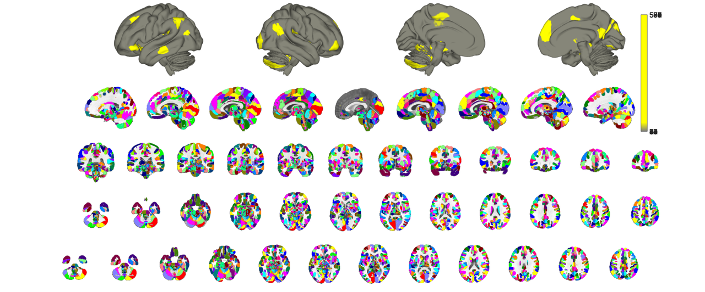 % notice how the plotting is both slow (even with hardware acceleration) % and regions slightly overlap around their margins. This is related to the % internal logic of how the montage function is called, namely addblobs() % is called for each ROI individually. A better and more accurate way to % map an atlas is to treat all contiguous regions of the atlas as blobs and % use the atlas parcel values (i.e. those in the *.dat object property) as % indices into a colormap. Let's try that to compare. Notice how we need +1 % indices relative to the number of regions in the atlas. This is to % account for unlabeled areas. % you could also use cmap=colormap('lines') for matlab native color schemes cmap_cells = scn_standard_colors(1+num_regions(canlab2023_fine_fmriprep20_1mm_thr)); cmap = cat(1,cmap_cells{:}); o2 = canlab_results_fmridisplay('full hcp'); canlab2023_fine_fmriprep20_1mm_thr.montage(o2, 'indexmap', cmap, 'interp', 'nearest');
Setting up fmridisplay objects
Compressed NIfTI files are not supported.
48
sagittal montage: 93490 voxels displayed, 1050209 not displayed on these slices
coronal montage: 84922 voxels displayed, 1058777 not displayed on these slices
axial montage: 118850 voxels displayed, 1024849 not displayed on these slices
axial montage: 118122 voxels displayed, 1025577 not displayed on these slices
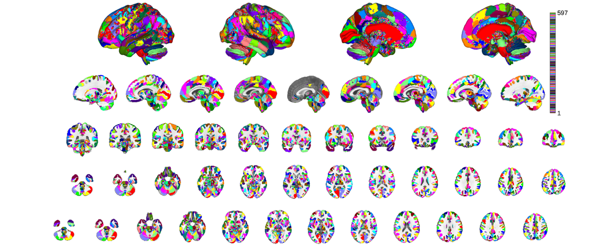 the most expedient way to plot of all is using the orthviews() function though
close all;
canlab2023_fine_fmriprep20_1mm.threshold(0.2).orthviews();
Keeping probability_map values above 0.20
Compressed NIfTI files are not supported.
SPM12: spm_check_registration (v6245) 02:00:40 - 01/02/2024
========================================================================
Display <a href="matlab:spm_image('display','/home/bogdan/.matlab/canlab/CanlabCore/CanlabCore/canlab_canonical_brains/Canonical_brains_surfaces/fmriprep20_template.nii.gz,1');">/home/bogdan/.matlab/canlab/CanlabCore/CanlabCore/canlab_canonical_brains/Canonical_brains_surfaces/fmriprep20_template.nii.gz,1</a>
Grouping voxels with unique mask values, assuming integer-valued mask: 597 regions
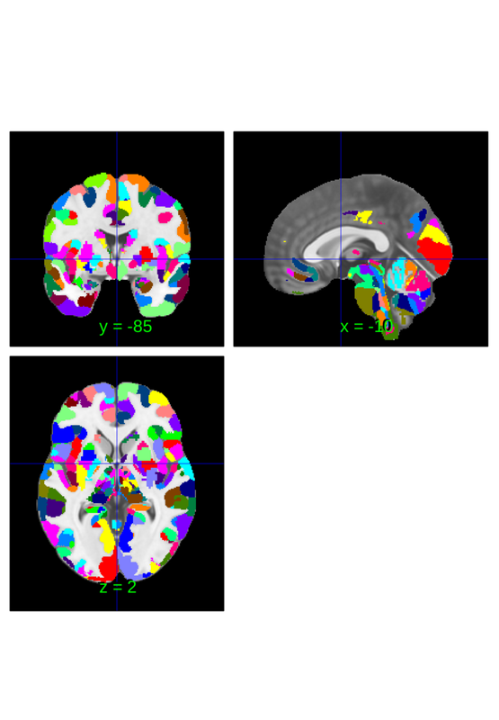 You can identify the location of a region at the crosshairs to interogate a label
subset = canlab2023_fine_fmriprep20_1mm.select_regions_near_crosshairs(); subset.orthviews();
Compressed NIfTI files are not supported.
SPM12: spm_check_registration (v6245) 02:00:49 - 01/02/2024
========================================================================
Display <a href="matlab:spm_image('display','/home/bogdan/.matlab/canlab/CanlabCore/CanlabCore/canlab_canonical_brains/Canonical_brains_surfaces/fmriprep20_template.nii.gz,1');">/home/bogdan/.matlab/canlab/CanlabCore/CanlabCore/canlab_canonical_brains/Canonical_brains_surfaces/fmriprep20_template.nii.gz,1</a>
Grouping voxels with unique mask values, assuming integer-valued mask: 18 regions
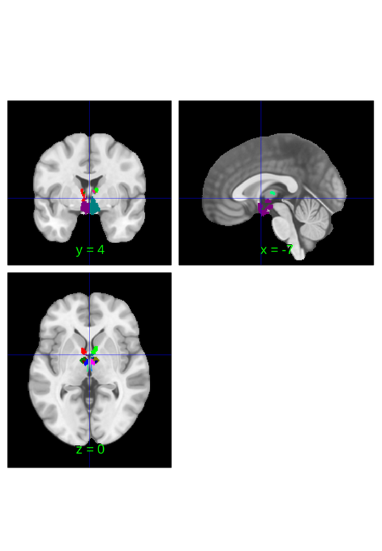 or for a cleaner picture you can try thresholding the image
subset.threshold(0.2).orthviews();
Keeping probability_map values above 0.20
Compressed NIfTI files are not supported.
SPM12: spm_check_registration (v6245) 02:00:51 - 01/02/2024
========================================================================
Display <a href="matlab:spm_image('display','/home/bogdan/.matlab/canlab/CanlabCore/CanlabCore/canlab_canonical_brains/Canonical_brains_surfaces/fmriprep20_template.nii.gz,1');">/home/bogdan/.matlab/canlab/CanlabCore/CanlabCore/canlab_canonical_brains/Canonical_brains_surfaces/fmriprep20_template.nii.gz,1</a>
Grouping voxels with unique mask values, assuming integer-valued mask: 18 regions
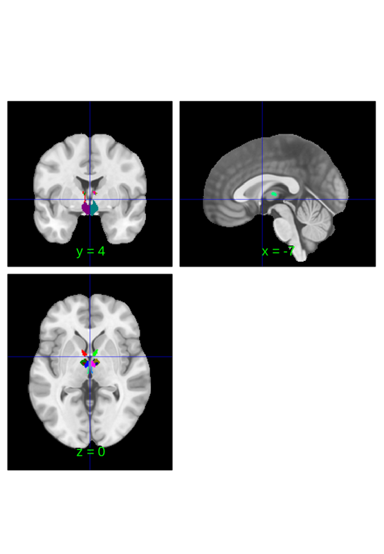 the probabilities sum to 1 in places where gray matter probability is 1 but may sum to lesser values in areas near tissue boundaries. Additionally, some areas had no probabilities associated with them in their native atlases and were given surrogate probabilities, in particular the thalamic nuclei and Shen's brainstem regions. The latter are basically filler regions to label voxels outside of Bianciardi's nuclei.
We can visualize thse tissue probabilities by taking the sum of probability maps. This is an improvisation, but serves to illustrate what kind of information is stored in the probability_maps field of atlas objects.
close all;
pmap = sum(canlab2023_fine_fmriprep20_1mm.probability_maps,2);
pimg = fmri_data();
pimg = pimg.resample_space(canlab2023_fine_fmriprep20_1mm);
pimg.dat = pmap;
pimg.montage;
Direct calls to spm_defauts are deprecated.
Please use spm('Defaults',modality) or spm_get_defaults instead.
Setting up fmridisplay objects
Compressed NIfTI files are not supported.
sagittal montage: 15140 voxels displayed, 1574601 not displayed on these slices
sagittal montage: 14985 voxels displayed, 1574756 not displayed on these slices
sagittal montage: 12776 voxels displayed, 1576965 not displayed on these slices
axial montage: 109803 voxels displayed, 1479938 not displayed on these slices
axial montage: 117645 voxels displayed, 1472096 not displayed on these slices
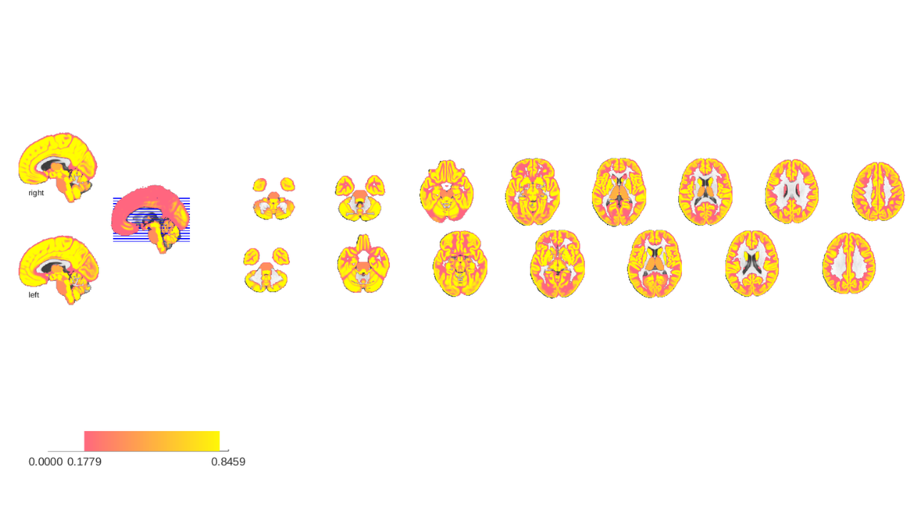 subregions of the atlas can be selected individually and there are multiple ways to do this. The most basic involves selecting a single region
close all; canlab2023_fine_fmriprep20_1mm.select_atlas_subset({'PAG'}).orthviews;
Compressed NIfTI files are not supported.
SPM12: spm_check_registration (v6245) 02:05:42 - 01/02/2024
========================================================================
Display <a href="matlab:spm_image('display','/home/bogdan/.matlab/canlab/CanlabCore/CanlabCore/canlab_canonical_brains/Canonical_brains_surfaces/fmriprep20_template.nii.gz,1');">/home/bogdan/.matlab/canlab/CanlabCore/CanlabCore/canlab_canonical_brains/Canonical_brains_surfaces/fmriprep20_template.nii.gz,1</a>
Grouping voxels with unique mask values, assuming integer-valued mask: 5 regions
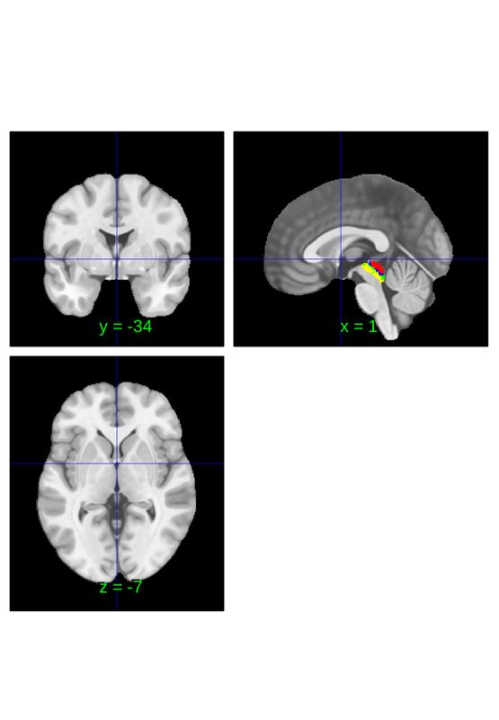 importantly this shows the entire region anywhere p(PAG) > 0, not the area where where p(PAG) > p(other regions). There's not a clean way to do this, but one way to quickly plot where PAG is the most probable region is by erasing the probability_maps field before extraction and plotting:
canlab2023_fine_fmriprep20_1mm_abr = canlab2023_fine_fmriprep20_1mm;
canlab2023_fine_fmriprep20_1mm_abr.probability_maps = [];
canlab2023_fine_fmriprep20_1mm_abr.select_atlas_subset({'PAG'}).orthviews;
Compressed NIfTI files are not supported.
SPM12: spm_check_registration (v6245) 02:05:43 - 01/02/2024
========================================================================
Display <a href="matlab:spm_image('display','/home/bogdan/.matlab/canlab/CanlabCore/CanlabCore/canlab_canonical_brains/Canonical_brains_surfaces/fmriprep20_template.nii.gz,1');">/home/bogdan/.matlab/canlab/CanlabCore/CanlabCore/canlab_canonical_brains/Canonical_brains_surfaces/fmriprep20_template.nii.gz,1</a>
Grouping voxels with unique mask values, assuming integer-valued mask: 5 regions
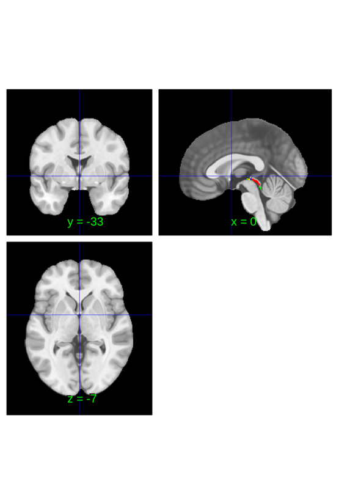 Downsampling an atlas
this atlas has multiple labels fields: labels, labels_2, labels_3, labels_4 and labels_5. All entries in labels should be unique since indices correspond to values in the *.dat properties, but subsequent labels are not constrained in any way. Ideally they will be nested within labels, i.e. f(labels_x) = labels_y is surjective for x<y. This allows for the downsample_parcelation method to be used to merge fine grained parcellations into coarser parcellations. For instance. The following converts the canlab2023 fine scale atlas into the canlab2023 coarse scale atlas.
canlab2023_coarse_fmriprep20_1mm = canlab2023_fine_fmriprep20_1mm.downsample_parcellation(); canlab2023_coarse_fmriprep20_1mm_thr = canlab2023_coarse_fmriprep20_1mm.threshold(0.2); o2 = canlab_results_fmridisplay('full hcp'); canlab2023_coarse_fmriprep20_1mm_thr.montage(o2, 'indexmap', cmap, 'interp', 'nearest');
Downsampling CANLab2023_MNI152NLin2009cAsym_fine parcels
Creating new region 525/525
Merging new region 525/525
Keeping probability_map values above 0.20
Setting up fmridisplay objects
Compressed NIfTI files are not supported.
48
sagittal montage: 93505 voxels displayed, 1050356 not displayed on these slices
coronal montage: 84935 voxels displayed, 1058926 not displayed on these slices
axial montage: 118873 voxels displayed, 1024988 not displayed on these slices
axial montage: 118141 voxels displayed, 1025720 not displayed on these slices
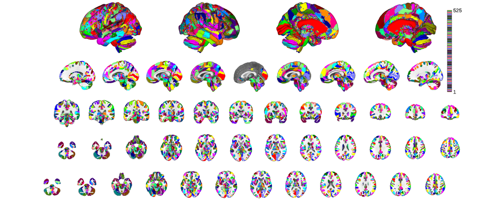 This process takes some time because there are many regions in both labels and labels_2. It runs faster when downsampling more aggressively (e.g. labels_3...5). For convenience the coarse (labels_2) version of this atlas is provided under a unique keyword that can be loaded with load_atlas. It is generated by downsampling, like in the above invocation, the first time it's run, but is also cached to your Neuroimaging_Pattern_Masks directory to expedite subsequent invocations of load_atlas for the coarse atlas.
You can check the equivalence by loading the coarse atlas explicitly and comparing. Ignore the comments about the qsiprep atlas that are printed during the assembly. They are not relevant to this tutorial
t0 = tic; canlab2023_coarse_fmriprep20_1mm_b = load_atlas('canlab2023_coarse_fmriprep20_1mm'); t1 = toc(t0); fprintf('Runtime: %0.2fs\n', t1);
Creating coarse volumetric CANLab2023 MNI152NLin2009cAsym 1.0mm atlas Loading atlas: bianciardi_MNI152NLin2009cAsym_atlas_object.mat Resampling space of atlas to add Adding regions Resampling space of atlas to add Adding regions Resampling space of atlas to add Adding regions Downsampling CANLab2023_MNI152NLin2009cAsym_coarse parcels Creating new region 525/525 Merging new region 525/525 Creating QSIPrep compatable CANLab2023 MNI152NLin2009cAsym coarse 1.0mm atlas... Warning: QSIPrep atlas being created needs more work. Resampling non-optimal atlas for now. Using default mask: /home/bogdan/.matlab/canlab/CanlabCore/CanlabCore/canlab_canonical_brains/Canonical_brains_surfaces/brainmask_canlab.nii loading mask. mapping volumes. checking that dimensions and voxel sizes of volumes are the same. Pre-allocating data array. Needed: 7776284 bytes Loading image number: 1 Elapsed time is 0.021179 seconds. Image names entered, but fullpath attribute is empty. Getting path info. Number of unique values in dataset: 53777 Bit rate: 15.71 bits Keeping probability_map values above 0.20 Writing: /home/bogdan/.matlab/canlab/Neuroimaging_Pattern_Masks/Atlases_and_parcellations/2023_CANLab_atlas/qsiprep/CANLab2023_MNI152NLin2009cAsym_coarse_1mm_qsiprep.nii Warning: Will overwrite old JSON atlas entry canlab2023_coarse Warning: Copying old json from /home/bogdan/.matlab/canlab/Neuroimaging_Pattern_Masks/Atlases_and_parcellations/2023_CANLab_atlas/qsiprep/atlas_config.json to /home/bogdan/.matlab/canlab/Neuroimaging_Pattern_Masks/Atlases_and_parcellations/2023_CANLab_atlas/qsiprep/atlas_config.json_bak Wrote qsiprep compatable atlas to /home/bogdan/.matlab/canlab/Neuroimaging_Pattern_Masks/Atlases_and_parcellations/2023_CANLab_atlas/qsiprep/ Loading atlas: CANLab2023_MNI152NLin2009cAsym_coarse_atlas_object.mat Runtime: 1971.03s
canlab2023_coarse_fmriprep20_1mm_thr_b = canlab2023_coarse_fmriprep20_1mm_b.threshold(0.2); o2 = canlab_results_fmridisplay('full hcp'); canlab2023_coarse_fmriprep20_1mm_thr_b.montage(o2, 'indexmap', cmap, 'interp', 'nearest');
Keeping probability_map values above 0.20
Setting up fmridisplay objects
Compressed NIfTI files are not supported.
48
sagittal montage: 93505 voxels displayed, 1050356 not displayed on these slices
coronal montage: 84935 voxels displayed, 1058926 not displayed on these slices
axial montage: 118873 voxels displayed, 1024988 not displayed on these slices
axial montage: 118141 voxels displayed, 1025720 not displayed on these slices
if you have not previously loaded this coarse atlases you can check the speedup by invoking the command again. For the sake of this tutorial I preemptively deleted the atlas befpore running the above so we can compare.
t0 = tic; canlab2023_coarse_fmriprep20_1mm_b = load_atlas('canlab2023_coarse_fmriprep20_1mm'); t1 = toc(t0); fprintf('Runtime: %0.2fs\n', t1);
Loading atlas: CANLab2023_MNI152NLin2009cAsym_coarse_atlas_object.mat Runtime: 0.49s
once cached the atlas is only rebuilt if a hashfile detects that there's been a change to the atlas. While the compiled atlas cannot be distributed, the hash file can and serves as a method of detecting the existence of an updated atlas. Anytime someone invokes the creation script the hash function for the new atlas is computed and saved to a file that's uploaded to github. That way when you pull an update you may not get the new atlas but you will get the new hash file and the new build scripts, so that way when you next invoke load_atlas it detects the update is available based on the mismatch between the hash file and your existing atlas and recompiles the atlas from its source files.
During highly iterative development cycles you may find yourself recompiling the atlas frequently. Resist the temptation to save a separate copy, since it will not be under version control and it will likely result in your use of an outdated and buggy atlas down the road.
Notice if you look at the original and downsampled atlas side by side how the labels fields have changed. Every label in the original atlas was downsampled and shifted down an integer so that labels_5 became labels_4, labels_3 become labels_2 etc. The original labels are lost, meaning downsampling is a lossy operation.
original atlas
disp(canlab2023_fine_fmriprep20_1mm);
atlas with properties:
atlas_name: 'CANLab2023_MNI152NLin2009cAsym_fine'
probability_maps: [1944071×597 double]
labels: {1×597 cell}
label_descriptions: {597×1 cell}
labels_2: {1×597 cell}
labels_3: {1×597 cell}
labels_4: {1×597 cell}
labels_5: {1×597 cell}
references: [20×417 char]
space_description: 'MNI152NLin2009cAsym'
property_descriptions: {1×8 cell}
additional_info: [1×1 struct]
dat: [1944071×1 int32]
dat_descrip: []
volInfo: [1×1 struct]
removed_voxels: [1944071×1 logical]
removed_images: 0
image_names: 'rh_spacetop_MNI152NLin2009cAsym.nii.gz'
fullpath: ''
files_exist: 1
history: {1×7 cell}
downsampled atlas
disp(canlab2023_coarse_fmriprep20_1mm);
atlas with properties:
atlas_name: 'CANLab2023_MNI152NLin2009cAsym_fine'
probability_maps: [1944071×525 double]
labels: {1×525 cell}
label_descriptions: {525×1 cell}
labels_2: {1×525 cell}
labels_3: {1×525 cell}
labels_4: {1×525 cell}
labels_5: {}
references: [20×417 char]
space_description: 'MNI152NLin2009cAsym'
property_descriptions: {1×8 cell}
additional_info: [1×1 struct]
dat: [1944071×1 int32]
dat_descrip: []
volInfo: [1×1 struct]
removed_voxels: [1944071×1 logical]
removed_images: 0
image_names: 'rh_spacetop_MNI152NLin2009cAsym.nii.gz'
fullpath: ''
files_exist: 1
history: {1×7 cell}
So far we've downsampled based on the atlas objects properties, but it is also possible to specify a categorical vector of labels to use for downsampling. For instance, we can adapt the network parcels from canlab2018 and apply them to canlab2023 by expoiting the naming conventions that are shared for their cortical labels.
canlab2018 = load_atlas('canlab2018'); nets = canlab2018.labels_2; labels = canlab2023_fine_fmriprep20_1mm.labels; % iter over canlab2023 labels and find the corresponding network label fro % canlab2018f sorted_nets = cell(1,length(labels)); for i = 1:length(labels) if contains(labels{i},'Ctx') sorted_nets{i} = nets{strcmp(canlab2018.labels,labels{i})}; else sorted_nets{i} = 'subctx'; end end nets = canlab2023_fine_fmriprep20_1mm.downsample_parcellation(sorted_nets); nets.threshold(0.2).orthviews
Loading atlas: CANlab_combined_atlas_object_2018.mat
Downsampling CANLab2023_MNI152NLin2009cAsym_fine parcels
Creating new region 17/17
Merging new region 17/17
Keeping probability_map values above 0.20
Compressed NIfTI files are not supported.
SPM12: spm_check_registration (v6245) 02:50:46 - 01/02/2024
========================================================================
Display <a href="matlab:spm_image('display','/home/bogdan/.matlab/canlab/CanlabCore/CanlabCore/canlab_canonical_brains/Canonical_brains_surfaces/fmriprep20_template.nii.gz,1');">/home/bogdan/.matlab/canlab/CanlabCore/CanlabCore/canlab_canonical_brains/Canonical_brains_surfaces/fmriprep20_template.nii.gz,1</a>
Grouping voxels with unique mask values, assuming integer-valued mask: 17 regions
ans =
1×1 cell array
{1×17 region}
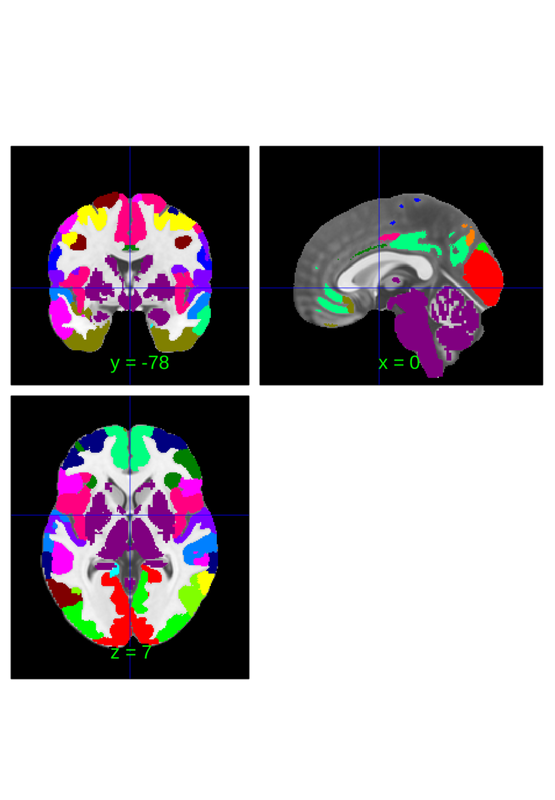 CANLab2023 labels* fields
in general labels_X should be a downsampled version of labels_Y but what each label represents will vary by atlas. The label fields of the CANLab2023 atlas in particular may be worth looking at individually though since it may see more general and frequent use than other atlases.
% CANLab2023 is a meta-atalas that combines pracels from multiple other % atlases. These atlases are all cited in the *.references field disp(canlab2023_coarse_fmriprep20_1mm.references);
Amunts et al (2023) [Dataset v3.0.3] DOI:10.25493/56EM-75H Amunts, K., Kedo, O., Kindler, M., Pieperhoff, P., Mohlberg, H., Shah, N. J., Habel, U., Schneider, F., & Zilles, K. (2005). Cytoarchitectonic mapping of the human amygdala, hippocampal region and entorhinal cortex: intersubject variability and probability maps. Anatomy and Embryology, 210(5–6), 343–352. https://doi.org/10.1007/s00429-005-0025-5 DOI: 10.1007/s00429-005-0025-5 Amunts, K., Mohlberg, H., Bludau, S., & Zilles, K. (2020). Julich-Brain: A 3D probabilistic atlas of the human brain s cytoarchitecture. Science, 369(6506), 988–992. https://doi.org/10.1126/science.abb4588 DOI: 10.1126/science.abb4588 Bianciardi M, Strong C, Toschi N, Edlow BL, Fischl B, Brown EN, Rosen BR, Wald LL. A probabilistic template of human mesopontine tegmental nuclei from in vivo 7T MRI. Neuroimage. 2018 Apr 15;170:222-230. doi: 10.1016/j.neuroimage.2017.04.070. Epub 2017 May 3. PMID: 28476663; PMCID: PMC5670016. Bianciardi M, Toschi N, Edlow BL, Eichner C, Setsompop K, Polimeni JR, Brown EN, Kinney HC, Rosen BR, Wald LL. Toward an In Vivo Neuroimaging Template of Human Brainstem Nuclei of the Ascending Arousal, Autonomic, and Motor Systems. Brain Connect. 2015 Dec;5(10):597-607. doi: 10.1089/brain.2015.0347. Epub 2015 Aug 11. PMID: 26066023; PMCID: PMC4684653. Diedrichsen, Jörn, Joshua H. Balsters, Jonathan Flavell, Emma Cussans, and Narender Ramnani. 2009. A Probabilistic MR Atlas of the Human Cerebellum. NeuroImage 46 (1): 39?46. García-Gomar MG, Strong C, Toschi N, Singh K, Rosen BR, Wald LL, Bianciardi M. In vivo Probabilistic Structural Atlas of the Inferior and Superior Colliculi, Medial and Lateral Geniculate Nuclei and Superior Olivary Complex in Humans Based on 7 Tesla MRI. Front Neurosci. 2019 Aug 7;13:764. doi: 10.3389/fnins.2019.00764. PMID: 31440122; PMCID: PMC6694208. García-Gomar MG, Videnovic A, Singh K, Stauder M, Lewis LD, Wald LL, Rosen BR, Bianciardi M. Disruption of brainstem structural connectivity in RBD using 7 Tesla MRI. Mov Disord. 2021 Dec 29. doi: 10.1002/mds.28895. Online ahead of print. PMID: 34964520 Glasser, Matthew F., Timothy S. Coalson, Emma C. Robinson, Carl D. Hacker, John Harwell, Essa Yacoub, Kamil Ugurbil, et al. 2016. A Multi-Modal Parcellation of Human Cerebral Cortex. Nature 536 (7615): 171?78. Jakab A, Blanc R, Berényi EL, Székely G. (2012) Generation of Individualized Thalamus Target Maps by Using Statistical Shape Models and Thalamocortical Tractography. AJNR Am J Neuroradiol. 33: 2110-2116, doi: 10.3174/ajnr.A3140 Kedo, O., Zilles, K., Palomero-Gallagher, N., Schleicher, A., Mohlberg, H., Bludau, S., & Amunts, K. (2017). Receptor-driven, multimodal mapping of the human amygdala. Brain Structure and Function. https://doi.org/10.1007/s00429-017-1577-x DOI: 10.1007/s00429-017-1577-x Kragel, P. A., Bianciardi, M., Hartley, L., Matthewson, G., Choi, J. K., Quigley, K. S., ... & Satpute, A. B. (2019). Functional involvement of human periaqueductal gray and other midbrain nuclei in cognitive control. Journal of Neuroscience, 2043-18. Krauth A, Blanc R, Poveda A, Jeanmonod D, Morel A, Székely G. (2010) A mean three-dimensional atlas of the human thalamus: generation from multiple histological data. Neuroimage. 2010 Feb 1;49(3):2053-62. Pauli, Wolfgang M., Amanda N. Nili, and J. Michael Tyszka. 2018. ?A High-Resolution Probabilistic in Vivo Atlas of Human Subcortical Brain Nuclei.? Scientific Data 5 (April): 180063. Shen X, Tokoglu F, Papademetris X, Constable R. Groupwise whole-brain parcellation from resting-state fMRI data for network node identification. Neuroimage 82, 403-415, 2013. Singh K, García-Gomar MG, Bianciardi M. Probabilistic Atlas of the Mesencephalic Reticular Formation, Isthmic Reticular Formation, Microcellular Tegmental Nucleus, Ventral Tegmental Area Nucleus Complex, and Caudal-Rostral Linear Raphe Nucleus Complex in Living Humans from 7 Tesla Magnetic Resonance Imaging. Brain Connect. 2021 Oct;11(8):613-623. doi: 10.1089/brain.2020.0975. Epub 2021 biancian 17. PMID: 33926237. Singh K, Indovina I, Augustinack JC, Nestor K, García-Gomar MG, Staab JP, Bianciardi M. Probabilistic Template of the Lateral Parabrachial Nucleus, Medial Parabrachial Nucleus, Vestibular Nuclei Complex, and Medullary Viscero-Sensory-Motor Nuclei Complex in Living Humans From 7 Tesla MRI. Front Neurosci. 2020 Jan 23;13:1425. doi: 10.3389/fnins.2019.01425. PMID: 32038134; PMCID: PMC6989551. Tian Y, Margulies D, Breakspear M, Zalesky A (2020). Nature Neuroscience. 23(11) 1421-1432. Tyszka, J. M. & Pauli, W. M. In vivo delineation of subdivisions of the human amygdaloid complex in a high-resolution group template. Hum. Brain Mapp. 37, 3979–3998 (2016). Wu J, Ngo GH, Greve D, Li J, He T, Fischl B, Eickhoff SB, Yeo T. Accurate nonlinear mapping between MNI volumetric and FreeSurfer surface coordinate systems. 2018. Human Brain Mapping 39(9) 3793-3808. DOI: 10.1002/hbm.24213
if you want to see what region atlas a parcel is associated with check the labels_5 field. For example,
disp(canlab2023_fine_fmriprep20_1mm.select_atlas_subset({'PAG'}).labels_5);
Columns 1 through 4
{'Kragel2019'} {'Kragel2019'} {'Kragel2019'} {'Kragel2019'}
Column 5
{'Kragel2019'}
In the case of the coarse atlases the labels indices are decremented by 1 so you check labels_4 instead,
disp(canlab2023_coarse_fmriprep20_1mm.select_atlas_subset({'PAG'}).labels_4);
{'Kragel2019'}
You can rapidly get an overview of the constituent atlases by downsampling to the labes_5 field and plotting the resulting parcels. Notice how in this case I downsample the atlas by specifying a specific labels_y field to downsample to. This is necessary to override the default behavior which is to just use labels_2.
atlas_src = canlab2023_fine_fmriprep20_1mm.downsample_parcellation('labels_5'); o2 = canlab_results_fmridisplay('full hcp'); atlas_src.montage(o2, 'indexmap', cmap, 'interp', 'nearest');
Downsampling CANLab2023_MNI152NLin2009cAsym_fine parcels
Creating new region 10/10
Merging new region 10/10
Setting up fmridisplay objects
Compressed NIfTI files are not supported.
48
sagittal montage: 127972 voxels displayed, 1461769 not displayed on these slices
coronal montage: 119514 voxels displayed, 1470227 not displayed on these slices
axial montage: 164698 voxels displayed, 1425043 not displayed on these slices
axial montage: 162414 voxels displayed, 1427327 not displayed on these slices
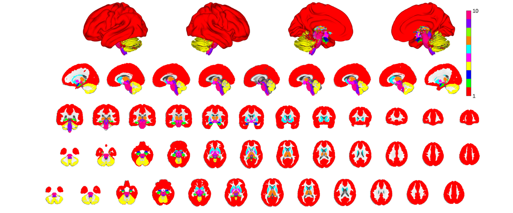 there are two more levels of parcel groupings: labels_3 and labels_4. Labels_4 contains glasser et al's coarse parcellation, roughly corresponding to the color scheme used in their atlas plots. For non-cortical regions the parcellation is somewhat arbitrary but is lateralized where sensible (e.g. left and right cerebellular lobules but a bilateral vermis) and largely groups subcortical structures according to classic gross subdivisions
canlab2023_glasser_metaparcels = canlab2023_fine_fmriprep20_1mm.downsample_parcellation('labels_4'); o2 = canlab_results_fmridisplay('full hcp'); canlab2023_glasser_metaparcels.montage(o2, 'indexmap', cmap, 'interp', 'nearest');
Downsampling CANLab2023_MNI152NLin2009cAsym_fine parcels
Creating new region 75/75
Merging new region 75/75
Setting up fmridisplay objects
Compressed NIfTI files are not supported.
48
sagittal montage: 127972 voxels displayed, 1461769 not displayed on these slices
coronal montage: 119514 voxels displayed, 1470227 not displayed on these slices
axial montage: 164698 voxels displayed, 1425043 not displayed on these slices
axial montage: 162414 voxels displayed, 1427327 not displayed on these slices
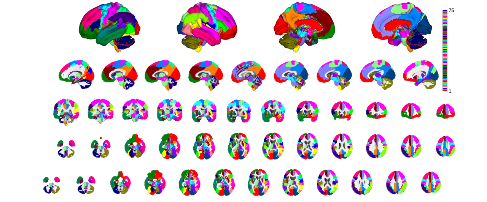 labels_3 is the least rigorously defined. The idea here was simply to have something in between labels_4 and labels_2 that would be particularly helpful in cases where the glasser cortical parcellation were too granular or where some additional level of parcel characterization might be helpful. For instance, the insula is divided into putatively granular, dysgranulra and agranular regions. For plotting purposes we only select the left hemisphere by looking for labels suffixed with '_L'
canlab2023_l3 = canlab2023_fine_fmriprep20_1mm.downsample_parcellation('labels_3'); canlab2023_l3_thr = canlab2023_l3.threshold(0.2); o2 = canlab_results_fmridisplay('full hcp'); canlab2023_l3_thr.montage(o2, 'indexmap', cmap, 'interp', 'nearest');
Downsampling CANLab2023_MNI152NLin2009cAsym_fine parcels
Creating new region 264/264
Merging new region 264/264
Keeping probability_map values above 0.20
Setting up fmridisplay objects
Compressed NIfTI files are not supported.
48
sagittal montage: 96100 voxels displayed, 1087600 not displayed on these slices
coronal montage: 87476 voxels displayed, 1096224 not displayed on these slices
axial montage: 122910 voxels displayed, 1060790 not displayed on these slices
axial montage: 122047 voxels displayed, 1061653 not displayed on these slices
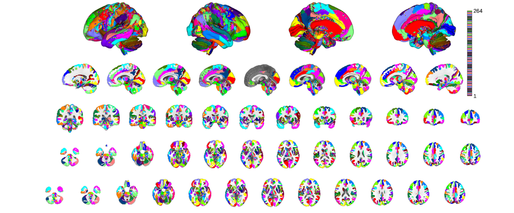 note how labes_4 has become labels_2 after downsampling
canlab2023_insula = canlab2023_l3.select_atlas_subset('insula','labels_2'); canlab2023_insula_L = canlab2023_insula.select_atlas_subset({'_L'}); canlab2023_insula_L.threshold(0.2).montage('regioncenters','saggital');
Warning: Unknown input string option:insula. Assuming it might be an atlas label. Place atlas labels in a cell array Keeping probability_map values above 0.20 Compressed NIfTI files are not supported. Warning: Unknown input string option:saggital Warning: Unknown input string option:saggital Warning: Unknown input string option:saggital Warning: Unknown input string option:saggital Warning: Unknown input string option:saggital Warning: Unknown input string option:saggital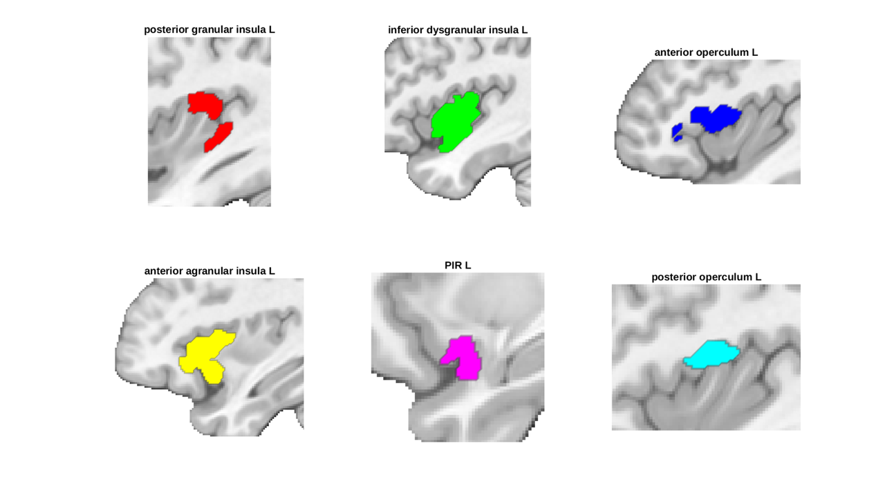
Let's also plot them all on the same slice so we can see how they fit together more clearly. To do this we will create a mask of the regions, find its center, and then replicate some of the code that's run internally when invoking montage('regioncenters') to obtain a slice-by-slice layout. The main changes I made were to using the indexmap plots of a single region as opposed to invoking addblobs on multiple regions separately.
I don't personally understand much of the montage plotting syntax but have found this kind of reverse engineering and trial and error to be an effective (albeit slow) way of producing plots of interest.
rIns = atlas2region(canlab2023_insula.threshold(0.2).select_atlas_subset({'_L'},'flatten'));
mm_center = rIns.mm_center; % offset slightly to better capture agranular insula
o2 = fmridisplay('overlay',which('fmriprep20_template.nii'));
[~, axh] = create_figure('fmridisplay_regioncenters', 1, 3, false, true);
o2 = montage(o2,'saggital','wh_slice', mm_center, 'onerow', 'existing_axes', axh(1), 'existing_figure');
o2 = montage(o2,'coronal','wh_slice', mm_center, 'onerow', 'existing_axes', axh(2), 'existing_figure');
o2 = montage(o2,'axial','wh_slice', mm_center, 'onerow', 'existing_axes', axh(3), 'existing_figure');
colors = scn_standard_colors(1+num_regions(canlab2023_insula_L));
colors = cat(1,colors{:});
addblobs(o2, canlab2023_insula_L.threshold(0.2), 'indexmap', colors, 'interp', 'nearest');
Keeping probability_map values above 0.20 Load underlay. Define axes. Ready. Load underlay. Define axes. Ready. Load underlay. Define axes. Ready. Keeping probability_map values above 0.20 sagittal montage: 1429 voxels displayed, 17248 not displayed on these slices coronal montage: 484 voxels displayed, 18193 not displayed on these slices axial montage: 705 voxels displayed, 17972 not displayed on these slices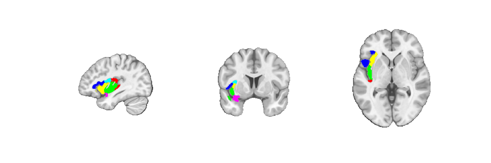
Atlas spaces and resolutions
Atlases are defined in particular spaces. This information is stored in the space_description property of an atlas object and available spaces (when known) are indicated in the load_atlas() help. For instance, canlab2023 is availble in MNI152NLin6Asym (fsl v6) space or MNI152NLin2009cAsym (fmriprep v20.2.3) spaces.
% Thus far we've used the fmriprep20 version but we can request the fsl6 % version instead like so. Notice the explicit specification of an % 'overlay' (really an underlay) canlab2023_fsl6 = load_atlas('canlab2023_fine_fsl6_1mm'); o2 = canlab_results_fmridisplay('full hcp','overlay',which('fsl6_hcp_template.nii')); canlab2023_fsl6.montage(o2, 'indexmap', cmap, 'interp', 'nearest');
Loading atlas: CANLab2023_MNI152NLin6Asym_fine_atlas_object.mat
Setting up fmridisplay objects
48
sagittal montage: 130404 voxels displayed, 1477004 not displayed on these slices
coronal montage: 121516 voxels displayed, 1485892 not displayed on these slices
axial montage: 167908 voxels displayed, 1439500 not displayed on these slices
axial montage: 165708 voxels displayed, 1441700 not displayed on these slices
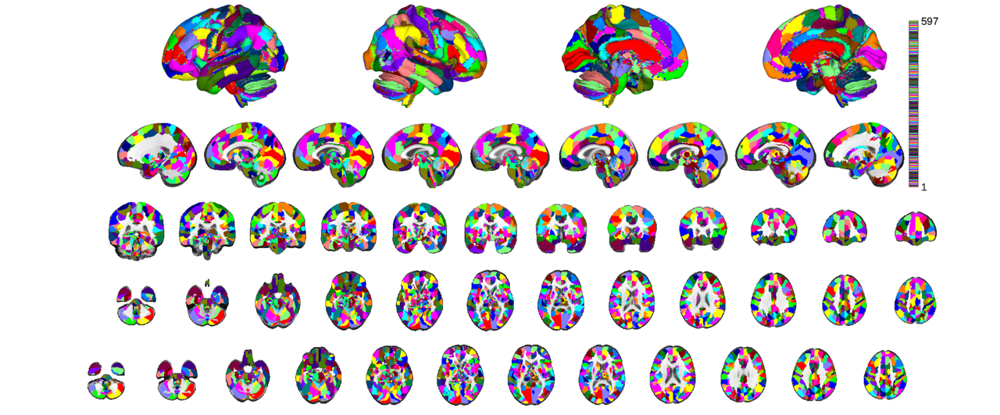 We can compare some parcels from this atlas and the fmriprep20 version by overlaying blobs with transparency. Let's use V1 as an example plotting the fsl space parcel in green and the fmriprep space parcel in red. We don't need to bother with the indexmap here because we're only plotting a single region, so we use the default addblobs plots for simplicity.
v1_fsl = canlab2023_fsl6.select_atlas_subset({'Ctx_V1_L'}).threshold(0.2);
v1_fmriprep = canlab2023_fine_fmriprep20_1mm.select_atlas_subset({'Ctx_V1_L'}).threshold(0.2);
mm_center = atlas2region(v1_fmriprep).mm_center;
o2 = fmridisplay('overlay',which('fmriprep20_template.nii'));
[~, axh] = create_figure('fmridisplay_regioncenters', 1, 3, false, true);
o2 = montage(o2,'saggital','wh_slice', mm_center, 'onerow', 'existing_axes', axh(1), 'existing_figure');
o2 = montage(o2,'coronal','wh_slice', mm_center, 'onerow', 'existing_axes', axh(2), 'existing_figure');
o2 = montage(o2,'axial','wh_slice', mm_center, 'onerow', 'existing_axes', axh(3), 'existing_figure');
colors = scn_standard_colors(2);
addblobs(o2,v1_fmriprep,'color',colors{1},'outline');
addblobs(o2,v1_fsl,'color',colors{2},'outline');
Keeping probability_map values above 0.20 Keeping probability_map values above 0.20 Load underlay. Define axes. Ready. Load underlay. Define axes. Ready. Load underlay. Define axes. Ready. sagittal montage: 719 voxels displayed, 15000 not displayed on these slices coronal montage: 323 voxels displayed, 15396 not displayed on these slices axial montage: 603 voxels displayed, 15116 not displayed on these slices sagittal montage: 712 voxels displayed, 15465 not displayed on these slices coronal montage: 308 voxels displayed, 15869 not displayed on these slices axial montage: 748 voxels displayed, 15429 not displayed on these slices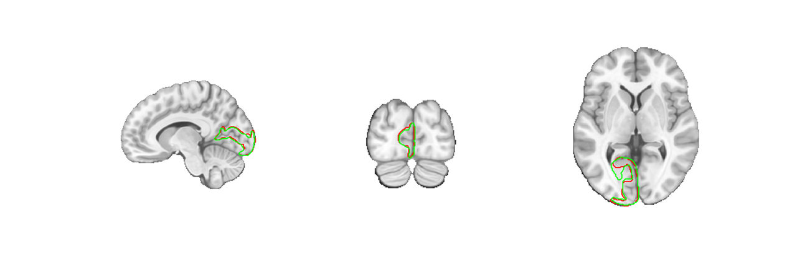
The difference is small. Using the wrong atlas is unlikely to lead to any major problems with your conclusions but it can lead to all sorts of coding headaches. For instance, sampling 'nan' values outside of your data's mask which then break scripts that expect numerical values, or overlapping parcels when combining regions from different atlases, etc. Problems become especially accute when working with atlases that have small regions, like brainstem nuclei.
In addition to template space considerations you should also consider your sampling resolution, and several atlases provide the option of one or more sampling resolutions. For instance, CANLab2023 has a 1mm and 2mm version. These are selected using the 1mm or 2mm suffix (see load_atlas help for details) when invoking load_atlas. For instance, here is the 2mm canlab2023 fmriprep atlas
canlab2023_fine_fmriprep20_2mm = load_atlas('canlab2023_fine_fmriprep20_2mm');
Loading atlas: CANLab2023_MNI152NLin2009cAsym_fine_2mm_atlas_object.mat
you may notice that this is not identical to the 1mm version. In particular some regions don't exist here.
labels_1mm = canlab2023_fine_fmriprep20_1mm.labels; labels_2mm = canlab2023_fine_fmriprep20_2mm.labels; missing = labels_1mm(~contains(labels_1mm,labels_2mm)); disp(missing) canlab2023_fine_fmriprep20_1mm.select_atlas_subset(missing).orthviews();
{'Thal_MV_L'} {'Thal_MV_R'}
Compressed NIfTI files are not supported.
SPM12: spm_check_registration (v6245) 02:55:38 - 01/02/2024
========================================================================
Display <a href="matlab:spm_image('display','/home/bogdan/.matlab/canlab/CanlabCore/CanlabCore/canlab_canonical_brains/Canonical_brains_surfaces/fmriprep20_template.nii.gz,1');">/home/bogdan/.matlab/canlab/CanlabCore/CanlabCore/canlab_canonical_brains/Canonical_brains_surfaces/fmriprep20_template.nii.gz,1</a>
Grouping voxels with unique mask values, assuming integer-valued mask: 2 regions
The thalamic region MV_L is 1mm thick and cannot be represented accurately at the 2mm resolution. Instead it's subsummed by its neighboring parcel. For consistency the MV_R parcel has also been removed and had its voxels assigned to its neighbor. This is unusual though. It is more common for resampling error to distort, shrink, or translate data in inaccurate ways that can be managed if handled with care. The 2mm versions of atlases available in our repos have been created specifically with an eye for such care by performing transformations and resampling in a single step to minimize the number of interpolations used. A similar procedure is used for transforming most brain imaging data from native space to template space too, so this follows the field's best practices.
% You can find more details on template spaces in the README.md file here: % https://github.com/canlab/Neuroimaging_Pattern_Masks/tree/master/templates
Parcel Manipulations
In the course of developing CANLab2023 I also created two new functions which seemed helpful for a variety of parcel manipulations that are worth being aware of: lateralize() and dilate(). This section may be particularly helpful if you're trying to create a custom atlas. Probably too much information for the average user.
lateralize() will take a bilatral region and return unilateral regions for each hemifield. It works by interogating the image metadata and assumes that the positive x direction points towards the right side of the brain. It could be improved by incorporating some coordinate convention awareness (e.g. RAS vs LAS) and incorporated into canlabCore as an atlas method, but for the time being it's still useful for splitting the brain, just be mindful to inspect the L/R suffixes it adds to make sure they're oriented correctly. We can illustrate its functionality easily using an atlas that doesn't natively lateralize regions, like CIT168.
cit168 = load_atlas('cit168');
cit168_lateralized = lateralize(cit168);
cit168.orthviews;
disp(cit168.labels);
disp(cit168.label_descriptions);
Warning: This version (v1.0.0) is deprecated. Please use v1.1.0 by invoking
cit168_fmriprep20 or cit168_fsl6.
Loading atlas: /home/bogdan/.matlab/canlab/Neuroimaging_Pattern_Masks/Atlases_and_parcellations/2018_CIT168_Reinf_Learn_v1.0.0/CIT168_MNI_subcortical_atlas_object.mat
Compressed NIfTI files are not supported.
SPM12: spm_check_registration (v6245) 02:55:40 - 01/02/2024
========================================================================
Display <a href="matlab:spm_image('display','/home/bogdan/.matlab/canlab/CanlabCore/CanlabCore/canlab_canonical_brains/Canonical_brains_surfaces/fmriprep20_template.nii.gz,1');">/home/bogdan/.matlab/canlab/CanlabCore/CanlabCore/canlab_canonical_brains/Canonical_brains_surfaces/fmriprep20_template.nii.gz,1</a>
Grouping voxels with unique mask values, assuming integer-valued mask: 16 regions
Columns 1 through 6
{'Put'} {'Cau'} {'NAC'} {'BST_SLEA'} {'GPe'} {'GPi'}
Columns 7 through 13
{'SNc'} {'RN'} {'SNr'} {'PBP'} {'VTA'} {'VeP'} {'Haben'}
Columns 14 through 16
{'Hythal'} {'Mamm_Nuc'} {'STN'}
{'Region 1 from CIT168_MNI_subcortical' }
{'Region 2 from CIT168_MNI_subcortical' }
{'Region 3 from CIT168_MNI_subcortical' }
{'Region 4 from CIT168_MNI_subcortical' }
{'Region 5 from CIT168_MNI_subcortical' }
{'Region 6 from CIT168_MNI_subcortical' }
{'Region 7 from CIT168_MNI_subcortical' }
{'Region 8 from CIT168_MNI_subcortical' }
{'Region 9 from CIT168_MNI_subcortical' }
{'Region 10 from CIT168_MNI_subcortical'}
{'Region 11 from CIT168_MNI_subcortical'}
{'Region 12 from CIT168_MNI_subcortical'}
{'Region 13 from CIT168_MNI_subcortical'}
{'Region 14 from CIT168_MNI_subcortical'}
{'Region 15 from CIT168_MNI_subcortical'}
{'Region 16 from CIT168_MNI_subcortical'}
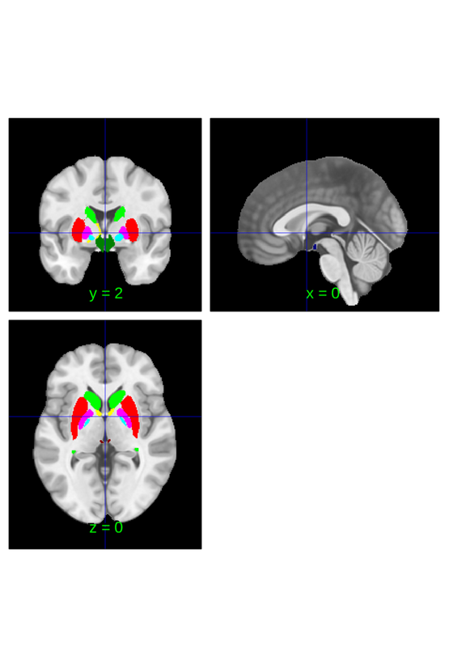 cit168_lateralized.orthviews; disp(cit168_lateralized.labels); disp(cit168_lateralized.label_descriptions);
Compressed NIfTI files are not supported.
SPM12: spm_check_registration (v6245) 02:55:41 - 01/02/2024
========================================================================
Display <a href="matlab:spm_image('display','/home/bogdan/.matlab/canlab/CanlabCore/CanlabCore/canlab_canonical_brains/Canonical_brains_surfaces/fmriprep20_template.nii.gz,1');">/home/bogdan/.matlab/canlab/CanlabCore/CanlabCore/canlab_canonical_brains/Canonical_brains_surfaces/fmriprep20_template.nii.gz,1</a>
Grouping voxels with unique mask values, assuming integer-valued mask: 32 regions
Columns 1 through 5
{'Put_L'} {'Cau_L'} {'NAC_L'} {'BST_SLEA_L'} {'GPe_L'}
Columns 6 through 11
{'GPi_L'} {'SNc_L'} {'RN_L'} {'SNr_L'} {'PBP_L'} {'VTA_L'}
Columns 12 through 16
{'VeP_L'} {'Haben_L'} {'Hythal_L'} {'Mamm_Nuc_L'} {'STN_L'}
Columns 17 through 21
{'Put_R'} {'Cau_R'} {'NAC_R'} {'BST_SLEA_R'} {'GPe_R'}
Columns 22 through 27
{'GPi_R'} {'SNc_R'} {'RN_R'} {'SNr_R'} {'PBP_R'} {'VTA_R'}
Columns 28 through 32
{'VeP_R'} {'Haben_R'} {'Hythal_R'} {'Mamm_Nuc_R'} {'STN_R'}
{'Region 1 from CIT168_MNI_subcortical (left)' }
{'Region 2 from CIT168_MNI_subcortical (left)' }
{'Region 3 from CIT168_MNI_subcortical (left)' }
{'Region 4 from CIT168_MNI_subcortical (left)' }
{'Region 5 from CIT168_MNI_subcortical (left)' }
{'Region 6 from CIT168_MNI_subcortical (left)' }
{'Region 7 from CIT168_MNI_subcortical (left)' }
{'Region 8 from CIT168_MNI_subcortical (left)' }
{'Region 9 from CIT168_MNI_subcortical (left)' }
{'Region 10 from CIT168_MNI_subcortical (left)' }
{'Region 11 from CIT168_MNI_subcortical (left)' }
{'Region 12 from CIT168_MNI_subcortical (left)' }
{'Region 13 from CIT168_MNI_subcortical (left)' }
{'Region 14 from CIT168_MNI_subcortical (left)' }
{'Region 15 from CIT168_MNI_subcortical (left)' }
{'Region 16 from CIT168_MNI_subcortical (left)' }
{'Region 1 from CIT168_MNI_subcortical (right)' }
{'Region 2 from CIT168_MNI_subcortical (right)' }
{'Region 3 from CIT168_MNI_subcortical (right)' }
{'Region 4 from CIT168_MNI_subcortical (right)' }
{'Region 5 from CIT168_MNI_subcortical (right)' }
{'Region 6 from CIT168_MNI_subcortical (right)' }
{'Region 7 from CIT168_MNI_subcortical (right)' }
{'Region 8 from CIT168_MNI_subcortical (right)' }
{'Region 9 from CIT168_MNI_subcortical (right)' }
{'Region 10 from CIT168_MNI_subcortical (right)'}
{'Region 11 from CIT168_MNI_subcortical (right)'}
{'Region 12 from CIT168_MNI_subcortical (right)'}
{'Region 13 from CIT168_MNI_subcortical (right)'}
{'Region 14 from CIT168_MNI_subcortical (right)'}
{'Region 15 from CIT168_MNI_subcortical (right)'}
{'Region 16 from CIT168_MNI_subcortical (right)'}
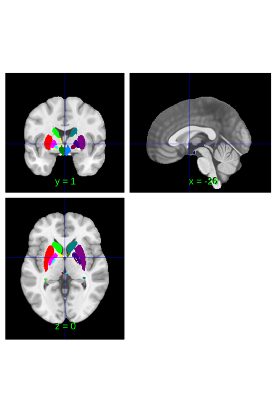 lateralize can also be used to create lateralized masks which can be helpful for constructing new brain atlases, modifying existing atlases and for evaluating left/right symmetry of brain physiology more generally (i.e. not only in the context of using an atlas).
default_mask = fmri_data(); default_mask = default_mask.resample_space(canlab2023_fine_fmriprep20_1mm); default_mask = atlas(default_mask, ... 'labels', {'brain'}, ... 'label_descriptions', {'No really, the brain'}); lateralized_mask = lateralize(default_mask); left_mask = fmri_mask_image(lateralized_mask.select_atlas_subset({'_L'})); right_mask = fmri_mask_image(lateralized_mask.select_atlas_subset({'_R'})); right_mask.orthviews;
Compressed NIfTI files are not supported.
SPM12: spm_check_registration (v6245) 02:55:44 - 01/02/2024
========================================================================
Display <a href="matlab:spm_image('display','/home/bogdan/.matlab/canlab/CanlabCore/CanlabCore/canlab_canonical_brains/Canonical_brains_surfaces/fmriprep20_template.nii.gz,1');">/home/bogdan/.matlab/canlab/CanlabCore/CanlabCore/canlab_canonical_brains/Canonical_brains_surfaces/fmriprep20_template.nii.gz,1</a>
Grouping contiguous voxels: 1 regions
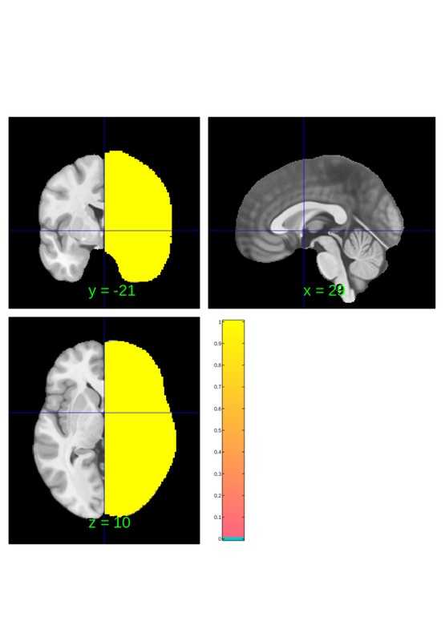 dilate() will take an atlas and a mask and dilate the atlas so that it fills the mask using nearest neighbor labels. The nearest neighbor step is slow, but this can be useful if you are creating a new atlas and want to fill out a particular region more neatly than some labeling scheme allows, for instance CANLab2023 was designed to fill out CIFTI volumetric parcels, but uses the CIT168 globus pallidus, which doesn't necessarily segment the pallidum identically. Dilate could asign any residual voxels to the appropriate CIT pallidal structure. It can also be useful if your particular segmentation doesn't quite match an atlas of interest. For instance, if you're working in pure volumetric space you may have areas corresponding to the basal ganglia that fall outside the CIFTI mask used for CANLab2023's creation.
Let's see how you might dilate the subcortical labels to incorporate some additional volume outside the CIFTI atlas. We will do this by dilating the cifti atlas, using the dilated cifti atlas and the canlab2023 atlas to label the newly created regions, and return a new subcorticl atlas. We'll use the default resolution/space of canlab2023 for this, which happens to be fmriprep20 space, the coarse parcellation and sampled 2mm, but can be invoked more directly by the canlab2023 keyword.
% load atlas canlab2023 = load_atlas('canlab2023'); % get cifti atlas and dilate it fid = fopen(which('hcp_cifti_subctx_labels.txt')); labels = strsplit(char(fread(fid,inf))'); fclose(fid); labels = labels(~cellfun(@isempty, labels)); cifti_atlas = atlas(which('hcp_cifti_subctx_labels_MNI152NLin2009cAsym.nii.gz'), ... 'labels',labels);
Loading atlas: CANLab2023_MNI152NLin2009cAsym_coarse_2mm_atlas_object.mat Using default mask: /home/bogdan/.matlab/canlab/CanlabCore/CanlabCore/canlab_canonical_brains/Canonical_brains_surfaces/brainmask.nii loading mask. mapping volumes. checking that dimensions and voxel sizes of volumes are the same. Pre-allocating data array. Needed: 1409312 bytes Loading image number: 1 Elapsed time is 0.005704 seconds. Image names entered, but fullpath attribute is empty. Getting path info.
we can ignore cerebellum and brainstem for now. Brainstem is comprehensive and cerebellum is large and consequently slow to dilate. Not great for a demo. Meanwhile amygdala and hippocampus are embedded in the cortex and dilating those into surrounding gray matter seems less sensible than dilating say basal ganglia or thalamus into surrounding tissue. Slight misalignments of EPI to T1 might plausibly lead to meaningful evoked responses that we might attribute to the these regions instead of say white matter.
subctx = cifti_atlas.select_atlas_subset({'accumbens','caudate','putamen',...
'pallidum','thalamus'});
subctx = fmri_mask_image(subctx).replace_empty();
orig_subctx_regions = canlab2023.apply_mask(subctx).labels;
orig_subctx_regions = orig_subctx_regions(~contains(orig_subctx_regions,'Ctx'));
subctx.dat = iimg_smooth_3d(subctx.dat, subctx.volInfo, 0.5);
% dilate is automatically parallelized. Modify your parallel pool to match
% your number of cores (not virtual cores, virtual cores = 2*cores)
parpool(10)
canlab2023_dil = dilate(canlab2023,subctx);
canlab2023_dil = canlab2023_dil.select_atlas_subset(orig_subctx_regions);
canlab2023_dil_thr = canlab2023_dil.threshold(0.2);
o2 = canlab_results_fmridisplay('full hcp');
canlab2023_dil_thr.montage(o2, 'indexmap', cmap, 'interp', 'nearest');
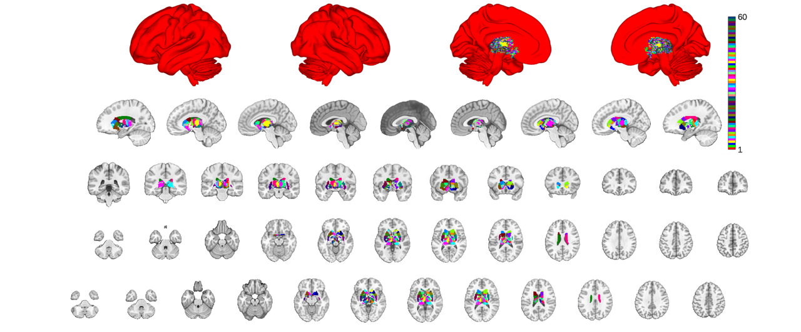 note that dilation doesn't deal with probablistic maps too well. To make this useful you'd need to check and potentially modify your probablity map values and also apply some ventricular mask.